library(mlr3verse)
tsk_german = tsk("german_credit")$select(
cols = c("duration", "amount", "age", "status", "savings", "purpose",
"credit_history", "property", "employment_duration", "other_debtors"))
split = partition(tsk_german)
lrn_gbm = lrn("classif.gbm", predict_type = "prob")
lrn_gbm$train(tsk_german, row_ids = split$train)12 Model Interpretation
Susanne Dandl
Ludwig-Maximilians-Universität München, and Munich Center for Machine Learning (MCML)
Przemysław Biecek
MI2.AI, Warsaw University of Technology, and University of Warsaw
Giuseppe Casalicchio
Ludwig-Maximilians-Universität München, and Munich Center for Machine Learning (MCML), and Essential Data Science Training GmbH
Marvin N. Wright
Leibniz Institute for Prevention Research and Epidemiology – BIPS, and University of Bremen, and University of Copenhagen
The increasing availability of data and software frameworks to create predictive models has allowed the widespread adoption of ML in many applications. However, high predictive performance of such models often comes at the cost of interpretability. Many models are called a ‘black box’ as the decision-making process behind their predictions is often not immediately interpretable. This lack of explanation can decrease trust in ML and may create barriers to the adoption of predictive models, especially in critical applications such as medicine, engineering, and finance (Lipton 2018).
In recent years, many interpretation methods have been developed that allow developers to ‘peek’ inside these models and produce explanations to, for example, understand how features are used by the model to make predictions (Guidotti et al. 2018). Interpretation methods can be valuable from multiple perspectives:
- To gain global insights into a model, for example, to identify which features were the most important overall or how the features act on the predictions.
- To improve the model if flaws are identified (in the data or model), for example, if the model depends on one feature unexpectedly.
- To understand and control individual predictions, for example, to identify how a given prediction may change if a feature is altered.
- To assess algorithmic fairness, for example, to inspect whether the model adversely affects certain subpopulations or individuals (see Chapter 14).
In this chapter, we will look at model-agnostic (i.e., can be applied to any model) interpretable machine learning (IML) methods that can be used to understand models post hoc (after they have been trained). We will focus on methods implemented in three R packages that nicely interface with mlr3: iml (Section 12.1), counterfactuals (Section 12.2), and DALEX (Section 12.3).
Interpretable Machine Learning
iml and DALEX offer similar functionality but differ in design choices in that iml makes use of the R6 class system whereas DALEX is based on the S3 class system. counterfactuals also uses the R6 class system. In contrast to iml and counterfactuals, DALEX focuses on comparing multiple predictive models, usually of different types. We will only provide a brief overview of the methodology discussed below, we recommend Molnar (2022) as a comprehensive introductory book about IML.
As a running example throughout this chapter, we will consider a gradient boosting machine (GBM) fit on half the features in the "german_credit" task. In practice, we would tune the hyperparameters of GBM as discussed in Chapter 4 and perform feature selection as discussed in Chapter 6 to select the most relevant features. However, for the sake of simplicity, we utilize an untuned GBM in these examples as it exhibited satisfactory performance even without fine-tuning.
Performance-based Interpretation Methods Require Test Data
Performance-based interpretation methods such as permutation feature importance (Section 12.1.1) rely on measuring the generalization performance. Hence, they should be computed on an independent test set to decrease bias in estimation (see Chapter 3).
However, the differences in interpretation between training and test data are less pronounced (Molnar et al. 2022) in prediction-based methods that do not require performance estimation such as ICE/PD (Section 12.1.2) or Shapley values (Section 12.1.4).
12.1 The iml Package
iml (Molnar, Bischl, and Casalicchio 2018) implements a unified interface for a variety of model-agnostic interpretation methods that facilitate the analysis and interpretation of machine learning models. iml supports machine learning models (for classification or regression) fitted by any R package, and in particular all mlr3 models are supported by wrapping learners in an Predictor object, which unifies the input-output behavior of the trained models. This object contains the prediction model as well as the data used for analyzing the model and producing the desired explanation. We construct the Predictor object using our trained learner and heldout test data:
With our Predictor setup we can now consider different model interpretation methods.
12.1.1 Feature Importance
When deploying a model in practice, it is often of interest to know which features contribute the most to the predictive performance of the model. This can be useful to better understand the problem at hand and the relationship between features and target. In model development, this can be used to filter features (Section 6.1) that do not contribute a lot to the model’s predictive ability. In this book, we use the term ‘feature importance’ to describe global methods that calculate a single score per feature that reflect the importance regarding a given quantity of interest, e.g., model performance, thus allowing features to be ranked.
One of the most popular feature importance methods is the permutation feature importance (PFI), originally introduced by Breiman (2001a) for random forests and adapted by Fisher, Rudin, and Dominici (2019) as a model-agnostic feature importance measure (originally termed, ‘model reliance’). Feature permutation is the process of randomly shuffling observed values for a single feature in a dataset. This removes the original dependency structure of the feature with the target variable and with all other features while maintaining the marginal distribution of the feature. The PFI measures the change in the model performance before (original model performance) and after (permuted model performance) permuting a feature. If a feature is not important, then there will be little change in model performance after permuting that feature. Conversely, we would expect a clear decrease in model performance if the feature is more important. It is generally recommended to repeat the permutation process and aggregate performance changes over multiple repetitions to decrease randomness in results.
Permutation Feature Importance
PFI is run in iml by constructing an object of class FeatureImp and specifying the performance measure, below we use classification error. By default, the permutation is repeated five times to keep computation time low (this can be changed with n.repetitions when calling the constructor $new(), below we set n.repetitions = 100) and in each repetition, the importance value corresponding to the change in the classification error is calculated. The $plot() method shows the median of the five resulting importance values (as a point) and the boundaries of the error bars in the plot refer to the 5% and 95% quantiles of the importance values (Figure 12.1).
Increase the Number of Repetitions to Obtain Useful Error Bars
The default number of repetitions when constructing a FeatureImp object is 5. However, the number of repetitions should be increased if you want to obtain useful error bars from the resulting plot.
importance = FeatureImp$new(predictor, loss = "ce", n.repetitions = 100)
importance$plot()Warning: Using `size` aesthetic for lines was deprecated in ggplot2 3.4.0.
ℹ Please use `linewidth` instead.
ℹ The deprecated feature was likely used in the iml package.
Please report the issue at <https://github.com/giuseppec/iml/issues>.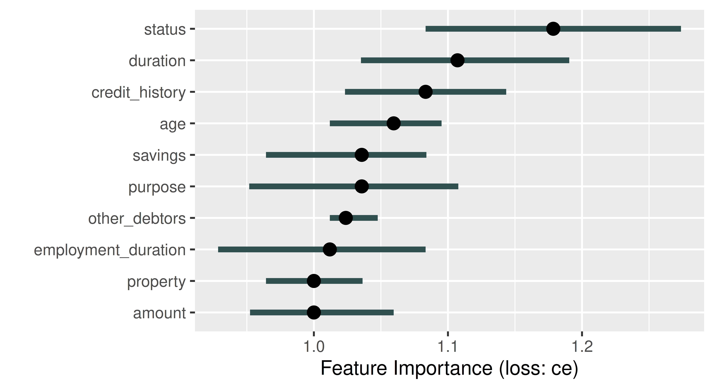
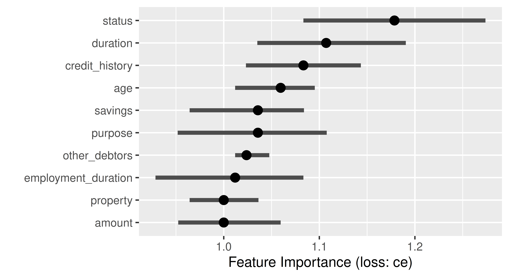
The plot automatically ranks features from most (largest median performance change) to least (smallest median performance change) important. In Figure 12.1, the feature status is most important, if we permute the status column in the data the classification error of our model increases by a factor of around 1.18. By default, FeatureImp calculates the ratio of the model performance before and after permutation as an importance value; the difference of the performance measures can be returned by passing compare = "difference" when calling $new().
12.1.2 Feature Effects
Feature effect methods describe how or to what extent a feature contributes towards the model predictions by analyzing how the predictions change when changing a feature. These methods can be distinguished between local and global feature effect methods. Global feature effect methods refer to how a prediction changes on average when a feature is changed. In contrast, local feature effect methods address the question of how a single prediction of a given observation changes when a feature value is changed. To a certain extent, local feature effect methods can reveal interactions in the model that become visible when the local effects are heterogeneous, i.e., if changes in the local effect are different across the observations.
Partial dependence (PD) plots (Friedman 2001) can be used to visualize global feature effects by visualizing how model predictions change on average when varying the values of a given feature of interest.
Partial Dependence
Individual conditional expectation (ICE) curves (Goldstein et al. 2015) (a.k.a. Ceteris Paribus Effects) are a local feature effects method that display how the prediction of a single observation changes when varying a feature of interest, while all other features stay constant. Goldstein et al. (2015) demonstrated that the PD plot is the average of ICE curves. ICE curves are constructed by taking a single observation and feature of interest, and then replacing the feature’s value with another value and plotting the new prediction, this is then repeated for many feature values (e.g., across an equidistant grid of the feature’s value range). The x-axis of an ICE curve visualizes the set of replacement feature values and the y-axis is the model prediction. Each ICE curve is a local explanation that assesses the feature effect of a single observation on the model prediction. An ICE plot contains one ICE curve (line) per observation. If the ICE curves are heterogeneous, i.e., not parallel, then the model may have estimated an interaction involving the considered feature.
Individual Conditional Expectation
Feature Effects Can Be Non-Linear
Feature effects are very similar to regression coefficients, \(\beta\), in linear models which offer interpretations such as “if you increase this feature by one unit, your prediction increases on average by \(\beta\) if all other features stay constant”. However, feature effects are not limited to linear effects and can be applied to any type of predictive model.
Let us put this into practice by considering how the feature amount influences the predictions in our subsetted credit classification task. Below we initialize an object of class FeatureEffect by passing the feature name of interest and the feature effect method, we use "pdp+ice" to indicate that we want to visualize ICE curves with a PD plot (average of the ICE curves). We recommend always plotting PD and ICE curves together as PD plots on their own could mask heterogeneous effects. We use $plot() to visualize the results (Figure 12.2).
effect = FeatureEffect$new(predictor, feature = "amount",
method = "pdp+ice")
effect$plot()Warning: `aes_string()` was deprecated in ggplot2 3.0.0.
ℹ Please use tidy evaluation idioms with `aes()`.
ℹ See also `vignette("ggplot2-in-packages")` for more information.
ℹ The deprecated feature was likely used in the iml package.
Please report the issue at <https://github.com/giuseppec/iml/issues>.![Two plots are visualized side-by-side. The x-axis for both says 'amount' and ranges from 0 to around 16000. The y-axis for both says 'Predicted credit_risk' and ranges from 0 to 1. The left plot is captioned 'good' and shows many thin black curves that are roughly parallel and slowly decrease from 0-10000 and then are roughly flat until the end of the plot. The right plot is captioned 'bad' and shows many thin black curves that are roughly parallel and slowly increase from 0-10000 and then are roughly flat until the end of the plot.](model_interpretation_files/figure-html/fig-iml-pdice-1.png)
Figure 12.2 shows that if the amount is smaller than roughly 10,000 then on average there is a high chance that the predicted creditworthiness will be good. Furthermore, the ICE curves are roughly parallel, meaning that there do not seem to be strong interactions present where amount is involved.
12.1.3 Surrogate Models
Interpretable models such as decision trees or linear models can be used as surrogate models to approximate or mimic an, often very complex, black box model. Inspecting the surrogate model can provide insights into the behavior of a black box model, for example by looking at the model coefficients in a linear regression or splits in a decision tree. We differentiate between local surrogate models, which approximate a model locally around a specific data point of interest, and global surrogate models which approximate the model across the entire input space (Ribeiro, Singh, and Guestrin 2016; Molnar 2022).
The features used to train a surrogate model are usually the same features used to train the black box model or at least data with the same distribution to ensure a representative input space. However, the target used to train the surrogate model is the predictions obtained from the black box model, not the real outcome of the underlying data. Hence, conclusions drawn from the surrogate model are only valid if the surrogate model approximates the black box model very well (i.e., if the model fidelity is high). It is therefore also important to measure and report the approximation error of the surrogate model.
The data used to train the black box model may be very complex or limited, making it challenging to directly train a well-performing interpretable model on that data. Instead, we can use the black box model to generate new labeled data in specific regions of the input space with which we can augment the original data. The augmented data can then be used to train an interpretable model that captures and explains the relationships learned by the black box model (in specific regions) or to identify flaws or unexpected behavior.
12.1.3.1 Global Surrogate Model
Initializing the TreeSurrogate class fits a conditional inference tree (ctree()) surrogate model to the predictions from our trained model. This class extracts the decision rules created by the tree surrogate and the $plot() method visualizes the distribution of the predicted outcomes from each terminal node. Below, we pass maxdepth = 2 to the constructor to build a tree with two binary splits, yielding four terminal nodes.
tree_surrogate = TreeSurrogate$new(predictor, maxdepth = 2L)Before inspecting this model, we need to first check if the surrogate model approximates the prediction model accurately, which we can assess by comparing the predictions of the tree surrogate and the predictions of the black box model. For example, we could quantify the number of matching predictions and measure the accuracy of the surrogate in predicting the predictions of the black box GBM model:
pred_surrogate = tree_surrogate$predict(credit_x, type = "class")$.class
pred_surrogate = factor(pred_surrogate, levels = c("good", "bad"))
pred_gbm = lrn_gbm$predict_newdata(credit_x)$response
confusion = mlr3measures::confusion_matrix(pred_surrogate, pred_gbm,
positive = "good")
confusion truth
response good bad
good 245 20
bad 39 26
acc : 0.8212; ce : 0.1788; dor : 8.1667; f1 : 0.8925
fdr : 0.0755; fnr : 0.1373; fomr: 0.6000; fpr : 0.4348
mcc : 0.3726; npv : 0.4000; ppv : 0.9245; tnr : 0.5652
tpr : 0.8627 This shows an accuracy of around 82% in predictions from the surrogate compared to the black box model, which is good enough for us to use our surrogate for further interpretation, for example by plotting the splits in the terminal node:
tree_surrogate$plot()
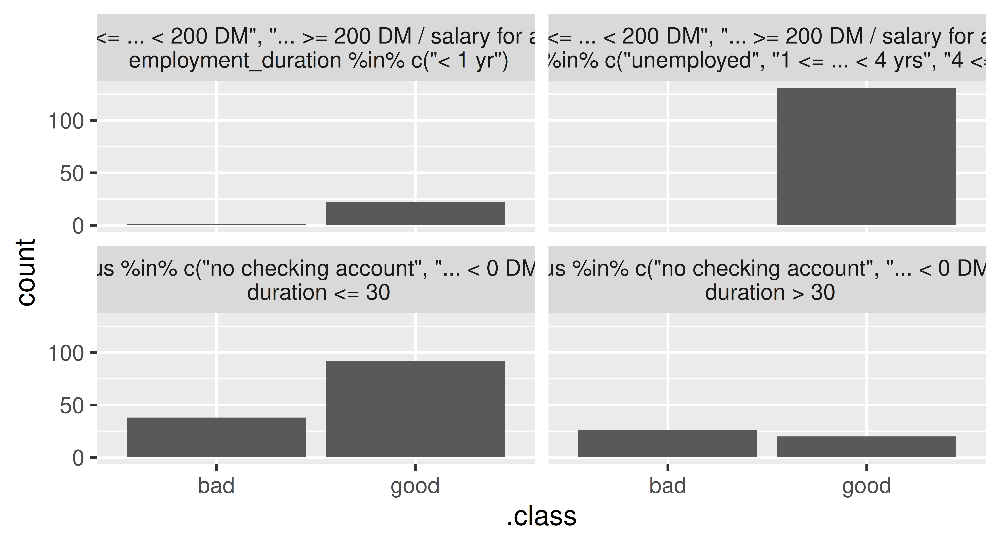
statusis either "0 <= ... < 200 DM", "... >= 200 DM" or "salary for at least 1 year") and either a duration of less or equal than 42 months (top left), or more than 42 months (top right). The bottom nodes contain applicants that either have no checking account or a negative balance (status) and either a duration of less than or equal to 36 months (bottom left) or more than 36 months (bottom right).
Or we could access the trained tree surrogate via the $tree field of the TreeSurrogate object and then have access to all methods in partykit:
partykit::print.party(tree_surrogate$tree)[1] root
| [2] status in no checking account, ... < 0 DM
| | [3] duration <= 30: *
| | [4] duration > 30: *
| [5] status in 0<= ... < 200 DM, ... >= 200 DM / salary for at least 1 year
| | [6] employment_duration in unemployed, 1 <= ... < 4 yrs, 4 <= ... < 7 yrs, >= 7 yrs: *
| | [7] employment_duration < 1 yr: *12.1.3.2 Local Surrogate Model
In general, it can be very difficult to accurately approximate the black box model with an interpretable surrogate in the entire feature space. Therefore, local surrogate models focus on a small area in the feature space surrounding a point of interest. Local surrogate models are constructed as follows:
- Obtain predictions from the black box model for a given dataset.
- Weight the observations in this dataset by their proximity to our point of interest.
- Fit an interpretable, surrogate model on the weighted dataset using the predictions of the black box model as the target.
- Explain the prediction of our point of interest with the surrogate model.
To illustrate this, we will select a random data point to explain. As we are dealing with people, we will name our observation “Charlie” and first look at the black box predictions:
Charlie = tsk_german$data(rows = 127L, cols = tsk_german$feature_names)
gbm_predict = predictor$predict(Charlie)
gbm_predict good bad
1 0.6014 0.3986We can see that the model predicts the class ‘good’ with 60.1% probability, so now we can use LocalModel to find out why this prediction was made. The underlying surrogate model is a locally weighted L1-penalized linear regression model such that only a pre-defined number of features per class, k (default is 3), will have a non-zero coefficient and as such are the k most influential features, below we set k = 2. We can also set the parameter gower.power which specifies the size of the neighborhood for the local model (default is gower.power = 1), the smaller the value, the more the model will focus on points closer to the point of interest, below we set gower.power = 0.1. This implementation is very closely related to Local Interpretable Model-agnostic Explanations (LIME) (Ribeiro, Singh, and Guestrin 2016), the differences are outlined in the documentation of iml::LocalModel.
predictor$class = "good" # explain the 'good' class
local_surrogate = LocalModel$new(predictor, Charlie, gower.power = 0.1,
k = 2)If the prediction of the local model and the prediction of the black box GBM model greatly differ, then you might want to experiment with changing the k and gower.power parameters. These parameters can be considered as hyperparameters of the local surrogate model, which should be tuned to obtain an accurate local surrogate. First, we check if the predictions for Charlie match:
c(gbm = gbm_predict[[1]], local = local_surrogate$predict()[[1]]) gbm local
0.6014 0.6449 Ideally, we should assess the fidelity of the surrogate model in the local neighborhood of Charlie, i.e., how well the local surrogate model approximates the predictions of the black box GBM model for multiple data points in the vicinity of Charlie. A practical approach to assess this local model fidelity involves generating artificial data points within Charlie’s local neighborhood (and potentially applying distance-based weighting) or selecting the \(k\) nearest neighbors from the original data. For illustration purposes, we now quantify the approximation error using the mean absolute error calculated from the 10 nearest neighbors (including Charlie) according to the Gower distance (Gower 1971):
ind_10nn = gower::gower_topn(Charlie, credit_x, n = 10)$index[, 1]
Charlie_10nn = credit_x[ind_10nn, ]
gbm_pred_10nn = predictor$predict(Charlie_10nn)[[1]]
local_pred_10nn = local_surrogate$predict(Charlie_10nn)[[1]]
mean(abs(gbm_pred_10nn - local_pred_10nn))[1] 0.112As we see good agreement between the local and black box model (on average, the predictions of both the local surrogate and the black box model for Charlie’s 10 nearest neighbors differ only by 0.112), we can move on to look at the most influential features for Charlie’s predictions:
local_surrogate$results[, c("feature.value", "effect")] feature.value effect
1 duration=12 -0.03058
2 status=no checking account -0.10077In this case, ‘duration’ and ‘status’ were most important and both have a negative effect on the prediction of Charlie.
12.1.4 Shapley Values
Shapley values were originally developed in the context of cooperative game theory to study how the payout of a game can be fairly distributed among the players that form a team. This concept has been adapted for use in ML as a local interpretation method to explain the contributions of each input feature to the final model prediction of a single observation (Štrumbelj and Kononenko 2013). Hence, the ‘players’ are the features, and the ‘payout’, which should be fairly distributed among features, refers to the difference between the individual observation’s prediction and the mean prediction.
Shapley values estimate how much each input feature contributed to the final prediction for a single observation (after subtracting the mean prediction). By assigning a value to each feature, we can gain insights into which features were the most important ones for the considered observation. Compared to the penalized linear model as a local surrogate model, Shapley values guarantee that the prediction is fairly distributed among the features as they also inherently consider interactions between features when calculating the contribution of each feature.
Correctly Interpreting Shapley Values
Shapley values are frequently misinterpreted as the difference between the predicted value after removing the feature from model training. The Shapley value of a feature is calculated by considering all possible subsets of features and computing the difference in the model prediction with and without the feature of interest included. Hence, it refers to the average marginal contribution of a feature to the difference between the actual prediction and the mean prediction, given the current set of features.
Shapley values can be calculated by passing the Predictor and the observation of interest to the constructor of Shapley. The exact computation of Shapley values is time consuming, as it involves taking into account all possible combinations of features to calculate the marginal contribution of a feature. Therefore, the estimation of Shapley values is often approximated. The sample.size argument (default is sample.size = 100) can be increased to obtain a more accurate approximation of exact Shapley values.
shapley = Shapley$new(predictor, x.interest = as.data.frame(Charlie),
sample.size = 1000)
shapley$plot()
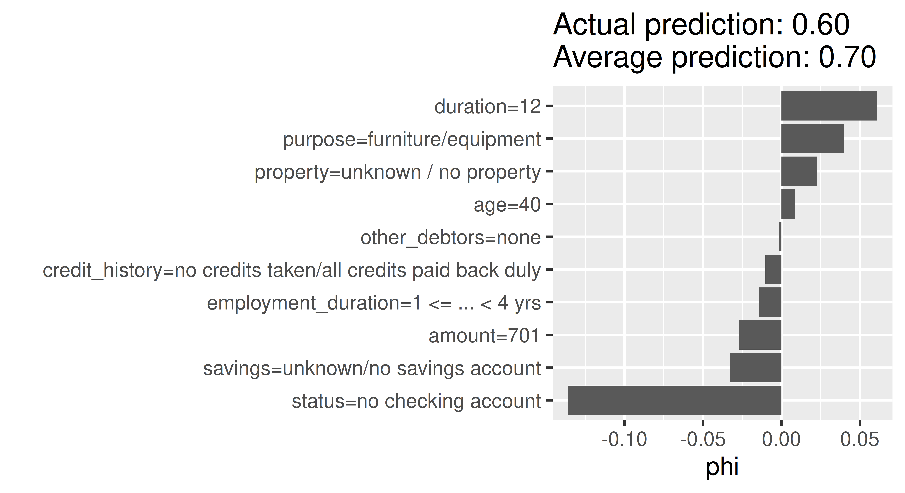
In Figure 12.4, the Shapley values (phi) of the features show us how to fairly distribute the difference of Charlie’s probability of being creditworthy to the dataset’s average probability among the given features. The approximation is sufficiently good if all Shapley values (phi) sum up to the difference of the actual prediction and the average prediction. Here, we used sample.size = 1000 leading to sufficiently good prediction difference of -0.09 between the actual prediction of Charlie (0.601) and the average prediction (0.696). The ‘purpose’ variable has the most positive effect on the probability of being creditworthy, with an increase in the predicted probability of around 5%. In contrast, the ‘status’ variable leads to a decrease in the predicted probability of over 10%.
12.2 The counterfactuals Package
Counterfactual explanations try to identify the smallest possible changes to the input features of a given observation that would lead to a different prediction (Wachter, Mittelstadt, and Russell 2017). In other words, a counterfactual explanation provides an answer to the question: “What changes in the current feature values are necessary to achieve a different prediction?”.
Counterfactual explanations can have many applications in different areas such as healthcare, finance, and criminal justice, where it may be important to understand how small changes in input features could affect the model’s prediction. For example, a counterfactual explanation could be used to suggest lifestyle changes to a patient to reduce their risk of developing a particular disease, or to suggest actions that would increase the chance of a credit being approved. For our tsk("german_credit") example, we might consider what changes in features would turn a ‘bad’ credit prediction into a ‘good’ one (Figure 12.5).
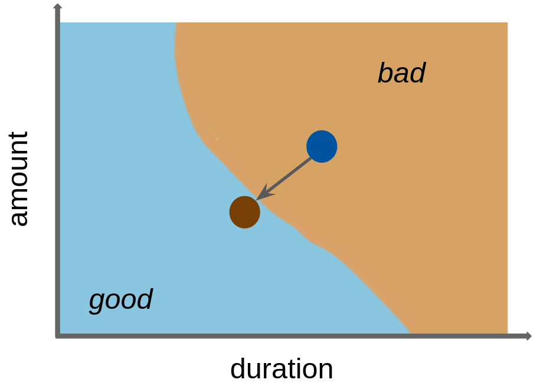
A simple counterfactual method is the What-If approach (Wexler et al. 2019) where, for a given prediction to explain, the counterfactual is the closest data point in the dataset with the desired prediction. Usually, many possible counterfactual data points can exist. However, the approach by Wexler et al. (2019), and several other early counterfactual methods (see Guidotti (2022) for a comprehensive overview), only produce a single, somewhat arbitrary counterfactual explanation, which can be regarded as problematic when counterfactuals are used for insights or actions against the model.
What-If
In contrast, the multi-objective counterfactuals method (MOC) (Dandl et al. 2020) generates multiple artificially-generated counterfactuals that may not be equal to observations in a given dataset. The generation of counterfactuals is based on an optimization problem that aims for counterfactuals that:
Multi-objective Counterfactuals
- Have the desired prediction;
- Are close to the observation of interest;
- Only require changes in a few features; and
- Originate from the same distribution as the observations in the given dataset.
In MOC, all four objectives are optimized simultaneously via a multi-objective optimization method. Several other counterfactual methods rely on single-objective optimization methods, where multiple objectives are combined into a single objective, e.g., using a weighted sum. However, a single-objective approach raises concerns about the appropriate weighting of objectives and is unable to account for inherent trade-offs among individual objectives. Moreover, it may restrict the solution set of the counterfactural search to a single candidate. MOC returns a set of non-dominated and, therefore equally good, counterfactuals with respect to the four objectives (similarly to the Pareto front we saw in Section 5.2).
Counterfactual explanations are available in the counterfactuals package, which depends on Predictor objects as inputs.
12.2.1 What-If Method
Continuing our previous example, we saw that the GBM model classifies Charlie as having good credit with a predicted probability of 60.1%. We can use the What-If method to understand how the features need to change for this predicted probability to increase to 75%. We initialize a WhatIfClassif object with our Predictor and state that we only want to find one counterfactual (n_counterfactuals = 1L), increasing n_counterfactuals would return the specified number of counterfactuals closest to the point of interest. The $find_counterfactuals() method generates a counterfactual of class Counterfactuals, below we set our desired predicted probability to be between 0.75 and 1 (desired_prob = c(0.75, 1)). The $evaluate(show_diff = TRUE) method tells us how features need to be changed to generate our desired class.
library(counterfactuals)
whatif = WhatIfClassif$new(predictor, n_counterfactuals = 1L)
cfe = whatif$find_counterfactuals(Charlie,
desired_class = "good", desired_prob = c(0.75, 1))
data.frame(cfe$evaluate(show_diff = TRUE)) age amount credit_history duration employment_duration other_debtors
1 -12 75 <NA> NA <NA> <NA>
property purpose savings status
1 <NA> <NA> <NA> ... >= 200 DM / salary for at least 1 year
dist_x_interest no_changed dist_train dist_target minimality
1 0.1227 3 0 0 2Here we can see that, to achieve a predicted probability of at least 75% for good credit, Charlie would have to be three years younger, the duration of credit would have to be reduced by three months, the amount would have to be increased by 1417 DM and the status would have to be ‘… < 0 DM’ (instead of ‘no checking account’) .
12.2.2 MOC Method
Calling the MOC method is similar to the What-If method but with a MOCClassif() object. We set the epsilon parameter to 0 to penalize counterfactuals in the optimization process with predictions outside the desired range. With MOC, we can also prohibit changes in specific features via the fixed_features argument, below we restrict changes in the ‘age’ variable. For illustrative purposes, we only run the multi-objective optimizer for 30 generations.
moc = MOCClassif$new(predictor, epsilon = 0, n_generations = 30L,
fixed_features = "age")
cfe_multi = moc$find_counterfactuals(Charlie,
desired_class = "good", desired_prob = c(0.75, 1))The multi-objective approach does not guarantee that all counterfactuals have the desired prediction so we use $subset_to_valid() to restrict counterfactuals to those we are interested in:
cfe_multi$subset_to_valid()
cfe_multi4 Counterfactual(s)
Desired class: good
Desired predicted probability range: [0.75, 1]
Head:
age amount credit_history duration
1: 40 701 no credits taken/all credits paid back duly 12
2: 40 2451 no credits taken/all credits paid back duly 4
3: 40 1550 existing credits paid back duly till now 12
6 variables not shown: [employment_duration, other_debtors, property, purpose, savings, status]This method generated 4 counterfactuals but as these are artificially generated they are not necessarily equal to actual observations in the underlying dataset. For a concise overview of the required feature changes, we can use the plot_freq_of_feature_changes() method, which visualizes the frequency of feature changes across all returned counterfactuals.
cfe_multi$plot_freq_of_feature_changes()Warning: `label` cannot be a <ggplot2::element_blank> object.
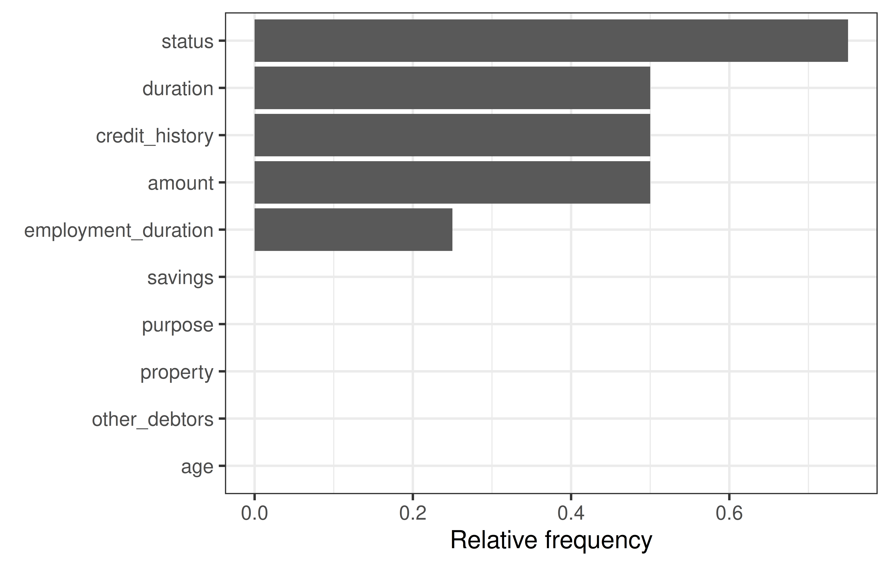
We can see that ‘status’ and ‘savings’ were changed most frequently in the counterfactuals. To see how the features were changed, we can visualize the counterfactuals for two features on a two-dimensional ICE plot.
cfe_multi$plot_surface(feature_names = c("status", "savings")) +
theme(axis.text.x = element_text(angle = 15, hjust = .7))
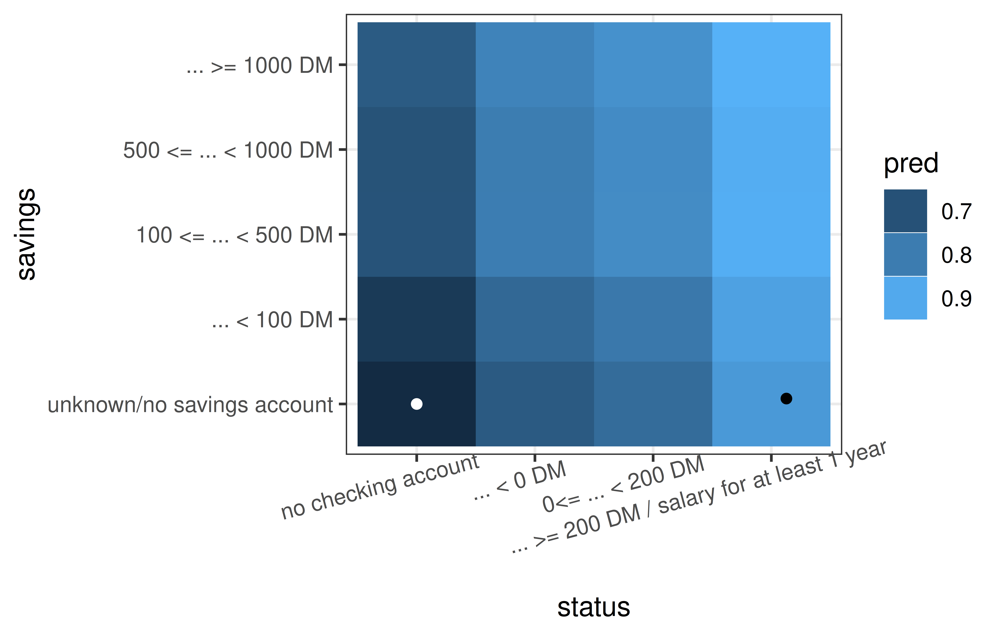
12.3 The DALEX Package
DALEX (Biecek 2018) implements a similar set of methods as iml, but the architecture of DALEX is oriented towards model comparison. The logic behind working with this package assumes that the process of exploring models is iterative, and in successive iterations, we want to compare different perspectives, including perspectives presented/learned by different models. This logic is commonly referred to as the Rashomon perspective, first described in Breiman (2001b) and more extensively developed and formalized as interactive explanatory model analysis (Baniecki, Parzych, and Biecek 2023).
You can use the DALEX package with any classification and regression model built with mlr3 as well as with other frameworks in R. As we have already explored the methodology behind most of the methods discussed in this section, we will just focus on the implementations of these methods in DALEX using the tsk("german_credit") running example.
Once you become familiar with the philosophy of working with the DALEX package, you can use other packages from this family such as fairmodels (Wiśniewski and Biecek 2022) for detection and mitigation of biases, modelStudio (Baniecki and Biecek 2019) for interactive model exploration, modelDown (Romaszko et al. 2019) for the automatic generation of IML model documentation, survex (Krzyziński et al. 2023) for the explanation of survival models, or treeshap for the analysis of tree-based models.
The analysis of a model is usually an interactive process starting with evaluating a model based on one or more performance metrics, known as a ‘shallow analysis’. In a series of subsequent steps, one can systematically deepen understanding of the model by exploring the importance of single variables or pairs of variables to an in-depth analysis of the relationship between selected variables to the model outcome. See Bücker et al. (2022) for a broader discussion of what the model exploration process looks like.
This explanatory model analysis (EMA) process can focus on a single observation, in which case we speak of local model analysis, or for a set of observations, in which case we refer to global model analysis. Figure 12.8 visualizes an overview of the key functions in these two scenarios that we will discuss in this section. An in-depth description of this methodology can be found in Biecek and Burzykowski (2021).
Explanatory Model Analysis
![Title says 'Explanatory Model Analysis', just below that in code font says 'DALEX::explain()'. Far left side is an arrow pointing upwards labeled 'Shallow' and one pointing down labeled 'Deep'. To the right of these arrows is the text 'Global Analysis' with an arrow pointing down to 'Model Performance, AUC, RMSE; DALEX::model_performance()', which has an arrow pointing down to 'Feature Importance, VIP; DALEX::model_parts()', which has an arrow pointing down to 'Feature Profiles, PD, ALE; DALEX::model_profile()'. To the right of 'Global Analysis' is the text 'Local Analysis', which has an arrow pointing to 'Model Predict; DALEX::predict()', which has an arrow pointing down to 'Feature Attributions, SHAP, BD; DALEX::predict_parts()', which has an arrow pointing down to 'Feature Profiles, Ceteris Paribus; DALEX::predict_profile()'.](Figures/DALEX_ema_process.png)
As with iml, DALEX also implements a wrapper that enables a unified interface to its functionality. For models created with the mlr3 package, we would use explain_mlr3(), which creates an S3 explainer object, which is a list containing at least: the model object, the dataset that will be used for calculation of explanations, the predict function, the function that calculates residuals, name/label of the model name and other additional information about the model.
library(DALEX)
library(DALEXtra)
gbm_exp = DALEXtra::explain_mlr3(lrn_gbm,
data = credit_x,
y = as.numeric(credit_y$credit_risk == "bad"),
label = "GBM Credit",
colorize = FALSE)
gbm_expModel label: GBM Credit
Model class: LearnerClassifGBM,LearnerClassif,Learner,R6
Data head :
age amount credit_history duration
1 67 1169 all credits at this bank paid back duly 6
2 49 2096 all credits at this bank paid back duly 12
employment_duration other_debtors property
1 >= 7 yrs none unknown / no property
2 4 <= ... < 7 yrs none unknown / no property
purpose savings
1 furniture/equipment ... >= 1000 DM
2 repairs unknown/no savings account
status
1 no checking account
2 ... >= 200 DM / salary for at least 1 year12.3.1 Global EMA
Global EMA aims to understand how a model behaves on average for a set of observations. In DALEX, functions for global level analysis are prefixed with model_.
The model exploration process starts (Figure 12.8) by evaluating the performance of a model. model_performance() detects the task type and selects the most appropriate measure, as we are using binary classification the function automatically suggests recall, precision, F1-score, accuracy, and AUC; similarly the default plotting method is selected based on the task type, below ROC is selected.
perf_credit = model_performance(gbm_exp)
perf_creditMeasures for: classification
recall : 0.4078
precision : 0.6462
f1 : 0.5
accuracy : 0.7455
auc : 0.7816
Residuals:
0% 10% 20% 30% 40% 50% 60% 70%
-0.83843 -0.43762 -0.31028 -0.22741 -0.15894 -0.10674 -0.06124 0.18553
80% 90% 100%
0.47835 0.63709 0.95862 old_theme = set_theme_dalex("ema")
plot(perf_credit, geom = "roc")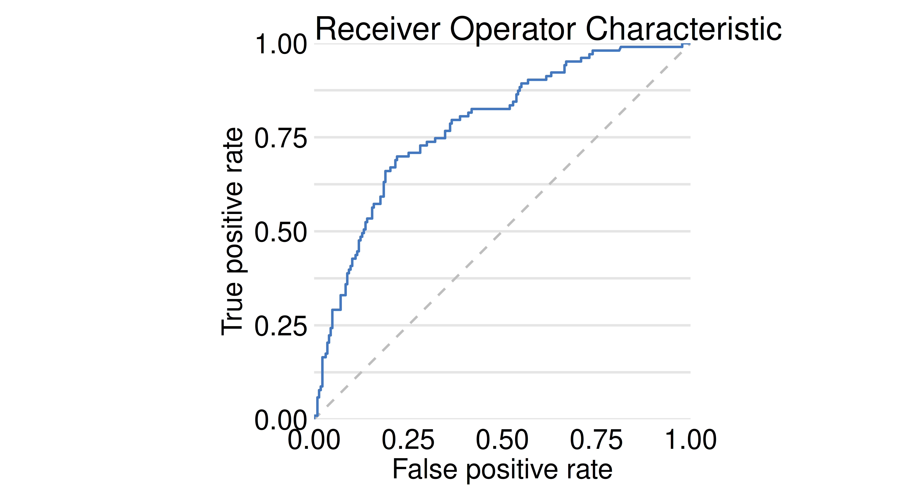
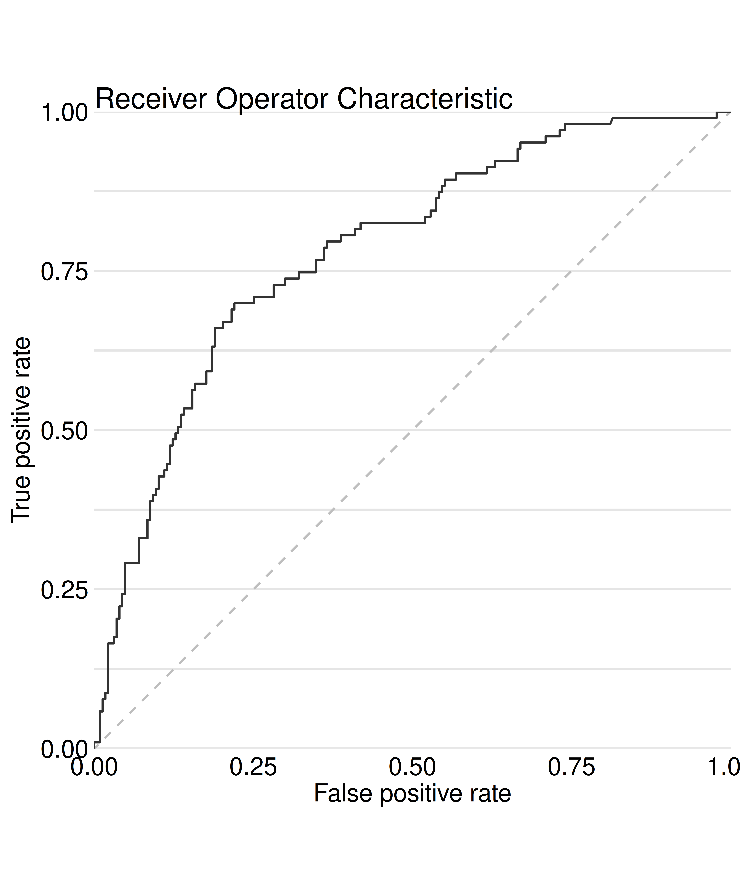
Visual Summaries
Various visual summaries may be selected with the geom parameter. For the credit risk task, the LIFT curve is a popular graphical summary.
Feature importance methods can be calculated with model_parts() and then plotted.
gbm_effect = model_parts(gbm_exp)
head(gbm_effect) variable mean_dropout_loss label
1 _full_model_ 0.2184 GBM Credit
2 other_debtors 0.2201 GBM Credit
3 employment_duration 0.2217 GBM Credit
4 age 0.2230 GBM Credit
5 property 0.2238 GBM Credit
6 savings 0.2283 GBM Creditplot(gbm_effect, show_boxplots = FALSE)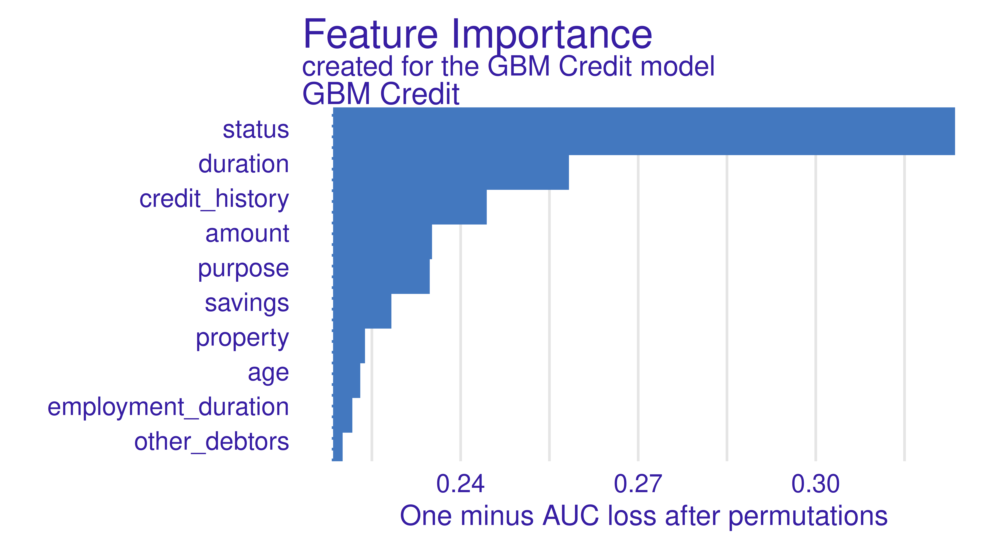
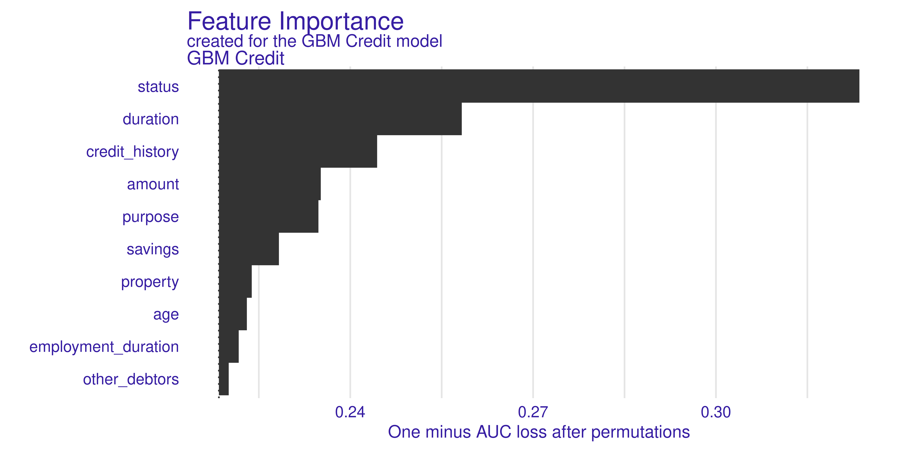
Calculating Importance
The type argument in the model_parts function allows you to specify how the importance of the features is to be calculated, by the difference of the loss functions (type = "difference"), by the quotient (type = "ratio"), or without any transformation (type = "raw").
Feature effects can be calculated with model_profile() and by default are plotted as PD plots.
gbm_profiles = model_profile(gbm_exp)
gbm_profilesTop profiles :
_vname_ _label_ _x_ _yhat_ _ids_
1 duration GBM Credit 4 0.1816 0
2 duration GBM Credit 6 0.1816 0
3 duration GBM Credit 8 0.2017 0
4 duration GBM Credit 9 0.2174 0
5 duration GBM Credit 10 0.2174 0
6 duration GBM Credit 11 0.2174 0plot(gbm_profiles) +
theme(legend.position = "top") +
ggtitle("Partial Dependence for GBM Credit model","")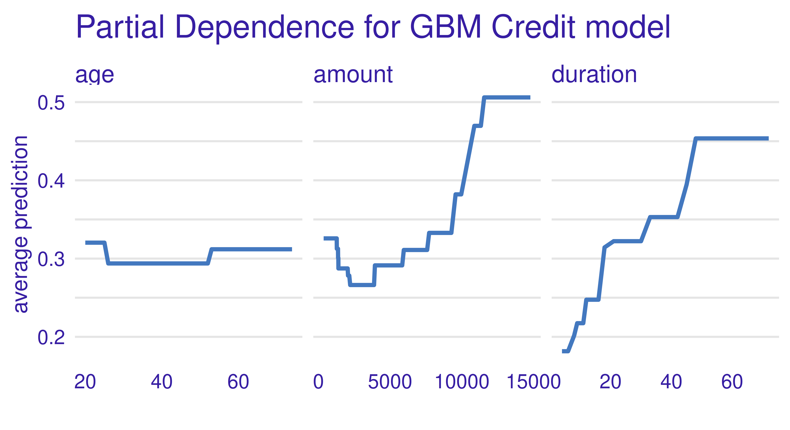

From Figure 12.11, we can see that the GBM model has learned a non-monotonic relationship for the feature amount.
Marginal and Accumulated Local Profiles
The type argument of the model_profile() function also allows marginal profiles (with type = "conditional") and accumulated local profiles (with type = "accumulated") to be calculated.
12.3.2 Local EMA
Local EMA aims to understand how a model behaves for a single observation. In DALEX, functions for local analysis are prefixed with predict_. We will carry out the following examples using Charlie again.
Local analysis starts with the calculation of a model prediction (Figure 12.8).
predict(gbm_exp, Charlie) bad
0.3986 As a next step, we might consider break-down plots, which decompose the model’s prediction into contributions that can be attributed to different explanatory variables (see the Break-down Plots for Additive Attributions chapter in Biecek and Burzykowski (2021) for more on this method). These are calculated with predict_parts():
plot(predict_parts(gbm_exp, new_observation = Charlie))`height` was translated to `width`.
Looking at Figure 12.12, we can read that the biggest contributors to the final prediction for Charlie were the features status and savings.
Selected Order of Features
The order argument allows you to indicate the selected order of the features. This is a useful option when the features have some relative conditional importance (e.g. pregnancy and sex).
The predict_parts() function can also be used to plot Shapley values with the SHAP algorithm (Lundberg, Erion, and Lee 2019) by setting type = "shap":
plot(predict_parts(gbm_exp, new_observation = Charlie, type = "shap"),
show_boxplots = FALSE)
The results for Break Down and SHAP methods are generally similar. Differences will emerge if there are many complex interactions in the model.
Speeding Up Shapley Computation
Shapley values can take a long time to compute. This process can be sped up at the expense of accuracy. The parameters B and N can be used to tune this trade-off, where N is the number of observations on which conditional expectation values are estimated (500 by default) and B is the number of random paths used to calculate Shapley values (25 by default).
Finally, we can plot ICE curves using predict_profile():
plot(predict_profile(gbm_exp, credit_x[30:40, ]))
12.4 Conclusions
In this chapter, we learned how to gain post hoc insights into a model trained with mlr3 by using the most popular approaches from the field of interpretable machine learning. The methods are all model-agnostic and so do not depend on specific model classes. iml and DALEX offer a wide range of (partly) overlapping methods, while counterfactuals focuses solely on counterfactual methods. We demonstrated on tsk("german_credit") how these packages offer an in-depth analysis of a GBM model fitted with mlr3. As we conclude the chapter we will highlight some limitations in the methods discussed above to help guide your own post hoc analyses.
Rashomon Effect
Explanations derived from an interpretation method can be ambiguous. A method can deliver multiple equally plausible but potentially contradicting explanations. This phenomenon is also called the Rashomon effect (Breiman 2001b). This effect can be due to changes in hyperparameters, the underlying dataset, or even the initial seed (Molnar et al. 2022).
High-Dimensional Data
tsk("german_credit") is low-dimensional with a limited number of observations. Applying interpretation methods off-the-shelf to higher dimensional datasets is often not feasible due to the enormous computational costs and so recent methods, such as Shapley values that use kernel-based estimators, have been developed to help over come this. Another challenge is that the high-dimensional IML output generated for high-dimensional datasets can overwhelm users. If the features can be meaningfully grouped, grouped versions of methods, e.g. the grouped feature importance proposed by Au et al. (2022), can be applied.
| Class | Constructor/Function | Fields/Methods |
|---|---|---|
Predictor |
$new() |
- |
FeatureImp |
$new(some_predictor) |
$plot() |
FeatureEffect |
$new(some_predictor) |
$plot() |
LocalModel |
$new(some_predictor, some_x) |
$results() |
Shapley |
$new(some_predictor, x.interest) |
$plot() |
WhatIfClassif |
$new(some_predictor) |
$find_counterfactuals() |
MOCClassif |
$new(some_predictor) |
$find_counterfactuals() |
explainer |
explain_mlr3() |
model_parts(); model_performance(); predict_parts()
|
12.5 Exercises
The following exercises are based on predictions of the value of soccer players based on their characteristics in the FIFA video game series. They use the 2020 fifa data available in DALEX. Solve them with either iml or DALEX.
- Prepare an
mlr3regression task for thefifadata. Select only features describing the age and skills of soccer players. Train a predictive model of your own choice on this task, to predict the value of a soccer player. - Use the permutation importance method to calculate feature importance ranking. Which feature is the most important? Do you find the results surprising?
- Use the partial dependence plot/profile to draw the global behavior of the model for this feature. Is it aligned with your expectations?
- Choose Manuel Neuer as a specific example and calculate and plot the Shapley values. Which feature is locally the most important and has the strongest influence on his valuation as a soccer player? Calculate the ceteris paribus profiles / individual conditional expectation curves to visualize the local behavior of the model for this feature. Is it different from the global behavior?
12.6 Citation
Please cite this chapter as:
Dandl S, Biecek P, Casalicchio G, Wright MN. (2024). Model Interpretation. In Bischl B, Sonabend R, Kotthoff L, Lang M, (Eds.), Applied Machine Learning Using mlr3 in R. CRC Press. https://mlr3book.mlr-org.com/model_interpretation.html.
@incollection{citekey,
author = "Susanne Dandl and Przemysław Biecek and Giuseppe Casalicchio and Marvin N. Wright",
title = "Model Interpretation",
booktitle = "Applied Machine Learning Using {m}lr3 in {R}",
publisher = "CRC Press", year = "2024",
editor = "Bernd Bischl and Raphael Sonabend and Lars Kotthoff and Michel Lang",
url = "https://mlr3book.mlr-org.com/model_interpretation.html"
}